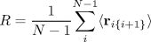
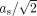
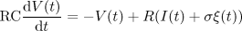
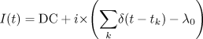
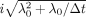
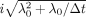
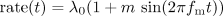
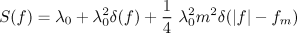
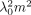
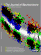

| HOME | HELP | FEEDBACK | SUBSCRIPTIONS | ARCHIVE | SEARCH | SEARCH RESULT |
| ||||||||||||||||||||
|
|
|||||||||||||||||||||||||||||
| ||||||||||||||||||||||||||||||||||||||||||||||||||||||||||||||
Department of Neurology, University of Chicago, Chicago, Illinois 60615
Submitted 27 January 2003; accepted in final form 26 February 2003
| ABSTRACT |
|---|
|
TOP INTRODUCTION METHODS RESULTS DISCUSSION ACKNOWLEDGMENTS REFERENCES |
|---|
| INTRODUCTION |
|---|
|
TOP ABSTRACT METHODS RESULTS DISCUSSION ACKNOWLEDGMENTS REFERENCES |
|---|
The spike timing reliability of a single event is related to the slope of the membrane potential at threshold crossing: neurons fire reliably in the presence of noise if the input causes a steep increase in membrane potential at the time of threshold crossing (Gerstner et al. 1996; Goldberg et al. 1984; Hunter et al. 1998; Stein 1967). However, this explanation does not account for reliability measured across an entire spike train. Consequently a number of investigations have focused on the interplay between the properties of the neuron and the statistical properties of its input. A variety of mechanisms become important. These include resonance between the input spectrum and neuronal spiking rate (Fellous et al. 2001; Haas and White 2002; Hunter et al. 1998; Jensen 1998), the presence of multiple stable attractors and their stability (Foss and Milton 2000; Pakdaman 2002; Tiesinga et al. 2002), and more complex membrane properties, such as the presence of subthreshold oscillations and persistent currents (Fellous et al. 2001; Haas and White 2002; Shalinsky et al. 2002; Svirskis et al. 2002).
Two different interpretations concerning the relationship between the frequency content of the neuronal input and spike timing reliability have arisen: increasing stimulus power, particularly in high-frequency bands, increases reliability (Mainen and Sejnowski 1995; Schneidman et al. 1998; Yamanobe and Pakdaman 2002) and increasing stimulus power in the frequency band corresponding to the intrinsic firing rate of the neuron increases reliability (Haas and White 2002; Hunter et al. 1998; Jensen 1998); for discussion see Haas and White (2002). That spike timing reliability can exhibit both types of dependencies has been underemphasized. The key point is that the mechanism for spike timing reliability depends on the relative amplitude of the fluctuations in the input, calculated as the coefficient of variation (CV) (Hunter et al. 1998; Jensen 2002). We investigate this amplitude dependence for several types of inputs in the Aplysia buccal ganglion and the leaky integrate and fire model.
The importance of the resonance mechanism is the implication that spike timing reliability can be sensitively and rapidly controlled with only small changes in neuronal firing rate. To illustrate this concept, we use the inhibitory buccal interneuron B4/5 to alter motoneuron firing rate, either increasing or decreasing reliability, consistent with the resonance mechanism. Because the control of spike-time reliability is closely related to control of synchrony in an uncoupled neuronal population receiving a coherent input (Collins et al. 1995; Knight 1972), this provides a mechanism by which synaptic or neuromodulatory input can dynamically regulate synchrony with only small changes in population firing rate (Hopfield and Brody 2001; Vaadia et al. 1995).
| METHODS |
|---|
|
TOP ABSTRACT INTRODUCTION RESULTS DISCUSSION ACKNOWLEDGMENTS REFERENCES |
|---|
Aplysia care and dissection were performed as described in Church and Lloyd (1994). The ganglion was constantly perfused with artificial seawater containing high-divalent cations; perfusion solution concentrations (in mM/l): 286 NaCl, 165 MgCl, 10 KCl, 33 CaCl, and 5 NaCOH. The high-divalent solution raises the threshold for neural firing and serves to quiet intrinsic network firing while allowing for the investigation of specific synapses, presumably via the mechanism of Gouy-Chapman charge screening (Gardner 1990; Hille 1992).
Recordings of the postsynaptic neuron were made in two-electrode current-clamp mode using an AxoClamp 2B amplifier (Axon Instruments, Foster City, CA) with electrode resistances 4 M. The presynaptic interneuron B4/5 was identified based on size, location, and the criterion that it generates inhibitory postsynaptic currents in buccal motoneurons. It was stimulated to fire action potentials with a constant current DC input and a sinusoidal input to regularize its firing using a second AxoClamp 2B amplifier in current clamp mode. B4/5 can mediate pure inhibitory, pure excitatory, or diphasic inhibitory/excitatory conductances depending on the follower cell; only pure inhibitory follower cells were investigated (identified as B3, 6, 8, or 9 in Gardner and Kandel 1977)
Data were low-pass filtered at 1 kHz with a Frequency Devices 902 low-pass filter (Frequency Devices, Haverhill, MA) and digitally sampled at 2 kHz. All recording and stimulation protocols were automated using an AD2210 A/D board (Real Time Devices, State College, PA) interfaced with a personal computer (Hunter et al. 1998).
Reliability statistic
We developed a statistic R to compute reliability between
N trains; N ≥ 2. Let si be the
ith spike train, where bold face indicates a vector of spike times,
sk
{ti1,
ti2,...}. Let nnk be
a vector of the nearest neighbors in train si,
k i, of each spike in si;
nnk and si are equal
length. Defining the weight vector rik =
exp(–|si –
nnk|/), where all operations are
element-wise, gives a measure of the instantaneous reliability, for each spike
in si, with train sk.
The quantities rik can be used to measure dynamic
changes in reliability or can be averaged over to summarize the reliability of
an entire response
 | (1) |
 rik is the average value of the
vector, a measure of the average reliability between
si and sk. We chose a
value of = 2 ms for our measurements, which is comparable to the width
of an action potential of the Aplysia motoneurons used in this
study.
rik is the average value of the
vector, a measure of the average reliability between
si and sk. We chose a
value of = 2 ms for our measurements, which is comparable to the width
of an action potential of the Aplysia motoneurons used in this
study.
For the experimental data, slow drifts in firing rate between successive
presentations of the stimuli sometimes occur; typically the spread of firing
rates between presentations was 2–4% of the median firing rate. To
reduce the impact of slow firing rate variations on the determination of
spike-time reliability, it is possible to compute R by comparing only
neighboring spike trains, i.e.
|  | (2) |
A variety of methods have been introduced to quantify reliability and precision (de Ruyter van Steveninck et al. 1997; Hunter et al. 1998; Mainen and Sejnowski 1995; Tiesinga et al. 2002). The method we use here has four primary advantages: it is computationally efficient and conceptually simple, the individual spike train responses can have time varying firing rates over any scale, it is applicable to an arbitrary number of responses, including the case of only two responses, and the statistic can be computed on a spike-by-spike basis allowing for the investigation of the temporal evolution of reliability.
Phase-locking protocols
The motoneuron was stimulated with a sinusoidal plus DC input. The DC input was adjusted so that the motoneuron regularly spiked at a frequency, f0, and the frequency of the sinusoidal component, fs, was varied. For each choice of f0, fs, we searched for regular patterns in neural spiking consistent with n:m phase locking, i.e., patterns in which m motoneuron spikes occur for every n cycles of sinusoidal current (n,m are integers). We minimized the effects of jitter on spike timing due to intrinsic noise by coarse-graining the time to 2-ms bins. A spike train was identified as having a n:m phase-locking pattern if the observed pattern repeated for ≥10 action potentials. For every sinusoidal stimulus point, we also stimulated the motoneuron with a DC stimulus alone and computed the median firing rate in response to DC to estimate f0 in the phase-locking interval. The relative frequency, fs/f0, was obtained by dividing the sinusoidal frequency by f0. The coefficient of variation of the sinusoidal plus DC input is , where as is the amplitude of the sine wave divided by the DC component.
If a neuron was accommodating during the course of the experiment, we sometimes detected different phase-locking solutions in different parts of the response with different values for fs/f0. In these cases the multiple values were plotted. A total of 1,292 spike trains were collected from four animals, one neuron per animal.
Leaky integrate-and-fire model
The phase-locking behavior of the leaky integrate-and-fire model has been
thoroughly analyzed (Knight
1972; Rescigno et al.
1970; Shimokawa et al.
2000; Tiesinga
2002). The entrainment properties of this model to sinusoidal and
aperiodic inputs are similar to those of vertebrate and invertebrate neurons
(Hunter et al. 1998;
Beierholm et al. 2001). The
model's voltage between action potentials is given by the solution to
|  | (3) |
|  | (4) |
 (t) is theDirac-delta function,
tk are the event times from the Poisson process
with modulated rate 0(1 +
msin(2
(t) is theDirac-delta function,
tk are the event times from the Poisson process
with modulated rate 0(1 +
msin(2 fmt)),
0 is the carrier rate, fm is
the modulation frequency, m is the modulation depth, and i
is the event amplitude (Knox
1970). Changes in the carrier rate affect the average firing rate
of the neuron and hence the location of the resonance peak; the
0 offset removes this confounding factor. We used a value
of DC = 10 nA giving f0 8.7 Hz with other parameters
given in the figure legends. This frequency is within the physiological range
at which many buccal neurons fire during feeding behavior
(Church and Lloyd 1994). From
Campbell's theorem, a Poisson distributed point process
i
fmt)),
0 is the carrier rate, fm is
the modulation frequency, m is the modulation depth, and i
is the event amplitude (Knox
1970). Changes in the carrier rate affect the average firing rate
of the neuron and hence the location of the resonance peak; the
0 offset removes this confounding factor. We used a value
of DC = 10 nA giving f0 8.7 Hz with other parameters
given in the figure legends. This frequency is within the physiological range
at which many buccal neurons fire during feeding behavior
(Church and Lloyd 1994). From
Campbell's theorem, a Poisson distributed point process
i k(t –
tk) has mean i0 and
SD
,
where
k(t –
tk) has mean i0 and
SD
,
where  t is the stepsize and the amplitude of
(t – tk) is
1/t. We used these equations to compute the coefficient of
variation of the input currents.
t is the stepsize and the amplitude of
(t – tk) is
1/t. We used these equations to compute the coefficient of
variation of the input currents. | RESULTS |
|---|
|
TOP ABSTRACT INTRODUCTION METHODS DISCUSSION ACKNOWLEDGMENTS REFERENCES |
|---|
We use the term "resonance" when the spectral content of the input is an important determinant of spike-time reliability. Figure 1 shows that the resonance effect for spike-time reliability depends on the relative amplitude of the neural input. The relative amplitude of the fluctuations in the input current was calculated as the CV, i.e., the SD of the fluctuations divided by the mean; our experiments examine the case where the mean is sufficiently large to trigger repetitive motoneuron spiking. The motoneuron is at rest at the onset of each stimulation with a sufficient interval (30–120 s) between stimulations to minimize effects from the previous stimulation.
|
In this experiment, a single Aplysia motoneuron was repeatedly stimulated with the same aperiodic input. The term "frozen noise" has been used by Haas and White (2002) to describe aperiodic signals used in the reliability protocol, i.e., protocols in which a single neuron is repeatedly stimulated with the same input. Two types of aperiodic signals were presented: broad-band noise constructed by low-pass filtering Gaussian-distributed white noise and the same signal with the frequency f0 removed; see Hunter et al. (1998) for details. The signals were normalized so that the total power was the same.
For very small relative amplitude inputs (CV = 0.025), neither signal generated reliable spiking (Fig. 1A). When the relative amplitude of the aperiodic input was moderate (CV = 0.15), the broad band signal containing f0 generates higher reliability than the input lacking that frequency band (Fig. 1B). In contrast, for a higher relative amplitude input (CV = 0.35), the reliability is higher still and does not depend on the presence of f0 (Hunter et al. 1998; Jensen 1998, 2002). All three examples, A–C, are taken from the same motoneuron, and similar effects are observed across neurons and animals. Thus the importance of resonance phenomena in spike timing reliability is a function of the relative amplitude of the neural input.
Modulated Poisson processes: three amplitude regimes
A physiologically relevant class of signals to explore the relative amplitude dependence of spike timing reliability is the modulated Poisson processes (Tuckwell 1989). These processes arise in the description of neural spike trains in which the probability of neural firing varies with time (Burkitt and Clark 2000; Perkel and Bullock 1968).
Here we consider spike train inputs drawn from a periodically modulated
Poisson process. The advantage of this signal is that the power spectra and
signal-to-noise ratio at the modulation frequency are known in closed form
(Bartlett 1963;
Bayly 1968;
Knox 1970). The modulation
rate is given by
|  |
A realization of a neural spike train generated by a periodically modulated
Poisson process is shown in Fig.
2A, and its power spectral density is shown in
Fig. 2B. The power
spectral density, S(f), is
|  | (5) |
is the Dirac delta function
(Knox 1970). The broad-band,
background power is the same at all frequencies and equals
0. The power at the modulation frequency is
0m2/4 and hence the signal to noise
ratio is proportional to
.
|
Figure 2C shows the spike-time reliability for the leaky integrate-and-fire model stimulated by a periodically modulated Poisson process in the presence of noise. The ordinate shows the signal to noise ratio and the abscissa shows the reliability statistic R. Each point represents the average of 20 numerical trials for a given combination of m and input CV. We applied a tonic current to offset the mean of the point process input so that the neuron's average firing rate would be unaffected by carrier rate; see Eq. 4. For all the points, then, the modulation frequency equaled the average neuronal firing rate; i.e., f0:fm was 1:1.
For each relative amplitude, there is a clear functional relationship between the reliability and the signal to noise ratio. For small relative amplitude inputs (CV < 0.05), the function is low and flat, for large relative amplitude inputs (CV > 1.6), it is high and flat, and for intermediate values, there is a monotonic relationship between 0m2 and R. An analogous effect is seen if the modulation depth is held constant and the modulation frequency is varied: there is a resonance peak only for moderate amplitude inputs; Fig. 2D. Thus a resonance effect is only observed when the relative amplitude of the input is moderate.
Phase locking and reliability of Aplysia motoneuron with sinusoidal input
The features of the amplitude-dependent resonance shown in Fig. 2C can also be identified from measurements of reliability in a regularly spiking neuron receiving a periodic input (Fig. 3). When the input to a regularly spiking neuron is itself periodic, it is possible that the neuron can become entrained to the input. In particular for some modulation amplitudes and frequencies, for each n cycles of the stimulus, there are m cycles of the spontaneous rhythm, i.e., n:m phase locking (Glass et al. 1980; Guevara et al. 1981; Hayashi et al. 1983; Jensen 2002; Keener et al. 1981; Pakdaman 2001; Szücs et al. 2001) An Arnold tongue diagram is a summary of the phase-locking patterns as a function of the relative frequencies of the two oscillators and the coupling strength, here the amplitude of the input, between them.
|
Figure 3A shows the phase-locking patterns from regularly spiking Aplysia motoneurons stimulated with sinusoidal input, and Fig. 3B the reliability of the resulting spike trains. The amplitude of the sinusoidal input has been normalized to the magnitude of the DC current step, labeled as as in Fig. 3. For the sake of comparison, the tongue boundaries obtained from Fig. 3A have also been indicated in Fig. 3B. While reliability is generally highest inside the 1:m tongues, the results do not agree precisely: some points inside the tongues show low reliability (blue), and some points outside the tongues are high (red).
Re-examining Fig. 3B in light of the results of Fig. 2C, we can see that there are three qualitatively different behaviors in reliability that depend on the amplitude of the input. When as < 0.05, the effects of intrinsic noise dominate, and there is no reliability for any input frequency. When as > 0.35, practically all frequencies are capable of generating reliable spike trains. In contrast, when 0.075 < as < 0.2, reliability depends intimately on the relationship between the sinusoidal input frequency, fs, and the intrinsic motoneuron spiking rate, f0.
Phase locking and reliability are related but not equivalent. Phase locking is determined by examining the phase of the stimulus at which an action potential occurs, whereas reliability depends on the time that the action potential occurs. For n:m phase locking, there are n different time solutions, all of which have the same phase solution (Hunter et al. 1998; Pakdaman 2002; Tiesinga 2002; Tiesinga et al. 2002). For this reason, in the presence of intrinsic neural noise, it is expected that the 1:m phase-locking regions will generate the most reliable spike trains; compare the 1:2 solution with the 3:2 solution in Fig. 4. The 1:1 phase-locking region is the most robust in the presence of noise (Knight 1972).
|
The results in Fig. 4 show that phase locking outside the 1:m tongues does not imply high reliability. The converse is true as well: high reliability does not imply phase locking. This is because spike-time reliability depends on the intrinsic noise in the neuron. In the absence of noise, different trials with the same initial conditions will be perfectly reliable. However, they may not be phase locked, e.g., if the input is quasiperiodic (Hayashi et al. 1983; Tiesinga 2002).
Controlling reliability with synaptic and DC hyperpolarizing input
The preceding results demonstrate that for moderate relative amplitude aperiodic or periodic neural inputs, spike-time reliability is determined by resonance between the intrinsic neural spiking rate and the spectral content of the input. Because spiking rates can be readily altered by synaptic inputs and neuromodulators, the ability of a neuron to support a spike timing code may be under active control (Hunter 2001; Hunter and Milton 2002). We investigated this possibility by measuring spike-time reliability when the input to the motoneuron is the same, but the motoneuron spiking frequency is changed by either injecting a hyperpolarizing current or with inhibitory synaptic input from the B4/5 interneuron. A change in the firing rate of the motoneuron corresponds to a horizontal movement in the Arnold tongue diagram and can be used to drive the system onto or off of a tongue, i.e., from a region where reliability is high to one where it is low and vice versa. We show that this mechanism can generate dramatic changes in reliability with only small changes in neuronal firing rates.
Figure 5A shows the repeated voltage responses of a motoneuron driven to tonic firing with a constant current and stimulated with a sine wave with parameters fs/f0 = 1.05 and as = 0.08. This point lies on the high reliability 1:1 tongue. Figure 5B shows the same neuron with the same parameters, except fs/f0 = 0.76, located to the left of the 1:1 tongue. By applying a step hyperpolarization (Fig. 5C), the relative frequency in both cases is increased, driving the neuron off the tongue in Fig. 5A and onto the tongue in Fig. 5B. The resultant decrease (A) and increase (B) in reliability are evident, showing that reliability can be controlled over a time scale of tens of milliseconds with small changes in neuronal firing rate. This sensitivity to firing rate is seen only in the moderate amplitude regime. Note that although the spikes in the entrained regions of Fig. 5, A and B. appear more reliable than those in Fig. 1C, they are not: the appearance is due to the difference in time scales. For example, even though the spikes are aligned in the first half of the response in Fig. 6A, there is still considerable jitter in the spike times at the time scale of 2 ms.
|
|
In Fig. 6, we utilize the buccal interneuron B4/5 to alter the firing rate of a motoneuron receiving a sinusoidal input. B4/5 is a cholinergic interneuron presynaptic to most of the identified motoneurons in the ganglia with well characterized synaptic dynamics (Gardner 1990; Hunter and Milton 2001; Kehoe and McIntosh 1998). We stimulated the motoneuron shown in Fig. 5 with the same pair of sinusoidal inputs, using the interneuron shown in Fig. 6C to control the relative frequency of the interneuron and the sinusoid. The frequency of interneuron firing was chosen to generate an average firing rate change equivalent to that caused by the hyperpolarizing DC current injection used in the preceding text. In addition, we stimulated the interneuron with a sinewave (not shown) equal to its firing rate to phase lock it and regularize its firing between trials and reduce its spike frequency accommodation. The changes in reliability caused by interneuronal stimulation parallel those seen in the hyperpolarizing DC stimulation.
Figure 6 shows that synaptic input can cause changes in spike-timing reliability consistent with the results from the Arnold tongue diagram. Activating the interneuron and slowing motoneuron firing can either increase or decrease reliability depending on the motoneuron relative firing rate fs/f0. However, synaptic input can have effects on spike-time reliability in addition to the rate effects. Notably, the inhibitory postsynaptic potentials (IPSPs) can entrain motoneuron firing as well (Cobb et al. 1995; Coombes and Bressloff 1999; Hunter and Milton 2002; Kopell and Ermentrout 1988; Pinsker 1977).
To determine the relative importance of these two effects on spike-time reliability, i.e., rate control and synaptic entrainment, we altered motoneuron firing with both a hyperpolarizing and a synaptic input for n = 20 experiments in three animals and measured the change in reliability induced by both stimuli. For each of these experiments, the frequency of interneuron firing was calibrated to induce a rate change comparable to that caused by the DC hyperpolarizing stimulus. One of these 20 experiments is shown in Figs. 5 and 6. The pure rate control experiments (DC hyperpolarization) explained 52% of the variance in the synaptic control experiments. Part of the remaining variance is presumably due to slow drift in neuronal state between stimulus repetitions. If we reduced the effect of firing rate drift between stimulus presentations by computing the reliability only for neighboring spike trains (Eq. 2), the rate control experiment account for 61% of the variance in the synaptic control experiments. The remaining variance in the reliability changes due to synaptic stimulation is presumably due to entrainment to the IPSPs, which is evident in Fig. 6B.
| DISCUSSION |
|---|
|
TOP ABSTRACT INTRODUCTION METHODS RESULTS ACKNOWLEDGMENTS REFERENCES |
|---|
Although our rate-control experiments concentrated on changes in spike-timing reliability to periodic inputs, numerical simulations using modulated Poisson inputs clearly indicate that the observations can be generalized to aperiodic inputs. The power spectrum of this aperiodic synaptic input plays the same role in spike-timing reliability as it does for aperiodic Gaussian-distributed colored noise (Haas and White 2002; Hunter et al. 1998; Jensen 1998). We anticipate that there will also be resonances to the case of aperiodic inputs constructed as so-called doubly stochastic Poisson processes, i.e., a Poisson process modulated by an aperiodic process (Bartlett 1963)
Our studies do not address which relative amplitude regime is used to generate reliable spike timing in vivo. Because the relative amplitude and frequency content of neuronal inputs continually varies (Jagadeesh et al. 1992; Steriade et al. 1993; Wilson and Kawaguchi 1996), it is quite likely that both amplitude- and resonance-dominated mechanisms are possible. Intuitively, the amplitude-dominated mechanism would be expected to arise in situations in which large populations of neurons must spike with very high reliability and precision, such as in response to the temporal binding of sensory stimuli (Engel et al. 1997) or in response to the generalized rhythms of sleep and consciousness (Contreras et al. 1996). Several of the studies noting the importance of high-frequency stimulus power (Cecchi et al. 2000; Mainen and Sejnowski 1995; Schneidman et al. 1998) have worked primarily in what we term the high-amplitude range. On the other hand, the greater flexibility of the resonance-dominated mechanism for spike timing reliability is quite seductive. Depending of their intrinsic firing frequencies, neurons can respond with either spike-time or rate codes or both. Rate-dependent regulation of spike timing is an alternate mechanism to support encoding with transient synchronizations (Abbott 2001; Hopfield and Brody 2001).
Motoneuron spike timing is an important aspect of the invertebrate control of motor activity. For example, invertebrate muscle contraction is sensitive to changes in the temporal pattern of neural spike trains (Brezina et al. 2000a,b; Cohen et al. 1978; Gillary and Kennedy 1969; Wachtel and Kandel 1971; Wiersma and Adams 1950). In the Aplysia buccal ganglion, identified motoneurons have a common inhibitory input from B4/5 (Gardner and Kandel 1977), continue firing while B4/5 is active (Church and Lloyd 1994), and can fire synchronously during feeding-like behavior (Hunter 2001). Thus the B4/5 interneuron is ideally placed to control motoneuron spike timing: with just small changes in rate, the reliability of spike timing of the muscle's neural input can be changed dramatically.
Aplysia has a comparatively simple nervous system, yet the complexity of the motor behaviors that can be generated is impressive. Our studies suggest that the organism has at its disposal an equally rich array of possible motoneuron spiking patterns that differ with respect to spike timing reliability. With just small changes in rate or input amplitude, the precision of timing of a motoneuron's neural input can be changed along with its correlation to other motoneurons (Vaadia et al. 1995). Moreover, it is possible that the same neuron can be a rate encoder or a spike-time encoder or both simultaneously. The consequences of these different correlations of motoneuron activity on behavior remain to be determined but likely depend on the biomechanical properties of the organism, such as the size, geometry and arrangement of the muscles, the mechanical properties of the tissues, and the effects of the organism's environment on its movements. Mazurek and Shadlen (2002) have shown how correlations in neuronal inputs can limit the ability of neuronal populations to encode a time varying input with population rates. Our results suggest the converse is true as well: small changes in firing rate of an uncoupled population of neurons receiving a coherent input affect the population's ability to synchronize to that input. Thus rate coding and spike-time coding are intricately intertwined. We anticipate that the fact that neural spike timing can be so readily and rapidly controlled may facilitate not only the development of novel paradigms to study the effects of different patterns of neural activity on motor control but also the design of brain stimulators to treat patients with medically intractable diseases of the nervous system (Milton and Jung 2002).
| ACKNOWLEDGMENTS |
|---|
|
TOP ABSTRACT INTRODUCTION METHODS RESULTS DISCUSSION REFERENCES |
|---|
This research was supported by grants from the National Institute of Mental Health and the Brain Research Foundation.
| FOOTNOTES |
|---|
Address for reprint requests: J. G. Milton, Dept. of Neurology, 5841 S. Maryland Ave., Chicago, IL 60615 (E-mail: sp1ace@ace.bsd.uchicago.edu).
| REFERENCES |
|---|
|
TOP ABSTRACT INTRODUCTION METHODS RESULTS DISCUSSION ACKNOWLEDGMENTS |
|---|
Bartlett MS. The spectral analysis of point processes. J Roy Stat Soc B 25: 264–280, 1963.[ISI]
Bayly EJ. Spectral analysis of pulse frequency modulation in the nervous systems. IEEE Trans Biomed Eng 15: 257–265, 1968.[Medline]
Beierholm U,
Nielsen C, Ryge J, Alstrøm P, and Kiehn O. Characterization of
reliability of spike timing in spinal interneurons during oscillating inputs.
J Neurophysiol 86:
1858–1868, 2001.
Berry MJ,
Warland DK, and Meister M. The structure and precision of retinal spike
trains. Proc Natl Acad Sci USA
94: 5411–5416,
1997.
Brezina V,
Church PJ and Weiss KR. Temporal pattern dependence of neuronal peptide
transmitter release: models and experiments. J
Neurosci 20:
6760–6772, 2000a.
Brezina V,
Orekhova IV, and Weiss KR. The neuromuscular transform: the dynamic,
nonlinear link between motor neuron firing patterns and muscle contraction in
rhythmic behaviors. J Neurophysiol
83: 207–231,
2000b.
Bryant HL and Segundo JP. Spike initiation by transmembrane current: a white-noise analysis. J Physiol 260: 279–314, 1976.[Abstract]
Burkitt AN and
Clark GM. Calculation of interspike intervals for integrate and fire
neurons with Poisson distribution of synaptic inputs. Neural
Comput 12:
1789–1820, 2000.
Cecchi G,
Sigman M, Alonso J, Martinez L, Chialvo D, and Magnasco M. Noise in
neurons is message dependent. Proc Natl Acad Sci USA
97: 5557–5561,
2000.
Church PJ and
Lloyd PE. Activity of multiple identified motor neurons recorded
intracellularly during evoked feedinglike motor programs in Aplysia.
J Neurophysiol 72:
1794–1809, 1994.
Cobb SR, Buhl EH, Halasy K, Paulsen O, and Somogyi P. Synchronization of neuronal activity in hippocampus by individual GABAergic interneurons. Nature (Lond) 378: 75–78, 1995.[ISI][Medline]
Cohen JL, Weiss
KR, and Kupfermann I. Motor control of buccal muscles in Aplysia.
J Neurophysiol 41:
157–181, 1978.
Collins JJ, Chow CC, and Imhoff TT. Stochastic resonance without tuning. Nature 376: 236–238, 1995.[ISI][Medline]
Contreras D,
Destexhe A, Sejnowski TJ, and Steriade M. Control of spatiotemporal
coherence of a thalamic oscillation by corticothalamic feedback.
Science 274:
771–774, 1996.
Coombes S and Bressloff PC. Mode locking and Arnold tongues in integrate-and-fire neural oscillators. Phys Rev E 60: 2086–2096, 1999.[ISI]
de Ruyter van Steveninck RR, Lewen GD, Strong SP, Koberle R, and Bialek
W. Reproducibility and variability in neural spike trains.
Science 275:
1805–1808, 1997.
Engel AK,
Roelfsema PR, Fries P, Brecht M, and Singer W. Role of the temporal domain
for response selection and perceptual binding. Cereb
Cortex 7:
571–582, 1997.
Fellous JM,
Houweling AR, Modi RH, Rao RP, Tiesinga PH, and Sejnowski TJ.
Frequency dependence of spike timing reliability in cortical pyramidal cells
and interneurons. J Neurophysiol
85: 1782–1787,
2001.
Foss J and
Milton J. Multistability in recurrent neural loops arising from delay.
J Neurophysiol 84:
975–985, 2000.
Gardner D. Paired individual and mean postsynaptic currents recorded in four-cell networks of Aplysia. J Neurosci 63: 1226–1240, 1990.
Gardner D and Kandel ER. Physiological and kinetic properties of cholinergic receptors activated by multiaction interneurons in buccal ganglia of Aplysia. J Neurosci 40: 333–348, 1977.
Gerstner W, van Hemmen JL, and Cowan JD. What matters in neuronal locking? Neural Comput 8: 1653–1676, 1996.[Abstract]
Gillary HL and
Kennedy D. Neuromuscular effects of impulse pattern in a crustacean
motoneuron. J Neurophysiol 32:
607–612, 1969.
Glass L, Graves C, Petrillo GA, and Mackey MC. Unstable dynamics of a periodically driven oscillator in the presence of noise. J Theor Biol 86: 455–473, 1980.[ISI][Medline]
Goldberg J,
Smith CE, and Fernández C. Relation between discharge regularity
and responses to externally applied galvanic currents in vestibular nerve
afferents of the squirrel monkey. J Neurophysiol
51: 1236–1256,
1984.
Guevara MR,
Glass L, and Shrier A. Phase locking, period-doubling bifurcations, and
irregular dynamics in periodically stimulated cardiac cells.
Science 214:
1350–1353, 1981.
Haag J and
Borst A. Encoding of visual motion information and reliability in spiking
and graded potential neurons. J Neurosci
17: 4809–4819,
1997.
Haas J and
White J. Frequency selectivity of layer II stellate cells in the medial
entorhinal cortex. J Neurophysiol
88: 2422–2429,
2002.
Hayashi H, Nakao M, and Hirakawa K. Entrained, harmonic, quasiperiodic and chaotic responses of the self-sustained oscillation of Nitella to sinusoidal stimulation. J Phys Soc JPN 52: 344–351, 1983.[ISI]
Hille B. Ionic Mechanisms of Excitable Membranes (2nd ed.). Sunderland, MA: Sinauer, 1992.
Hopfield J and
Brody C. What is a moment? Transient synchronization as a collective
mechanism for spatiotemporal integrations. Proc Natl Acad Sci
USA 98:
1282–1287, 2001.
Hunter JD. Control of Synchrony in the Aplysia Buccal Ganglion (PhD thesis). Chicago, IL: University of Chicago, 2001.
Hunter JD and
Milton JG. Synaptic heterogeneity and stimulus induced modulation of
depression in central synapses. J Neurosci
21: 5781–5793,
2001.
Hunter J D and Milton JG. Controlling neural synchrony with periodic and aperiodic stimuli. In: Epilepsy as a Dynamic Disease, edited by Milton JG and Jung P. New York: Springer-Verlag, 2002, p. 115–130.
Hunter JD,
Milton JG, Thomas PJ, and Cowan JD. Resonance effect for neural spike time
reliability. J Neurophysiol 80:
1427–1438, 1998.
Jagadeesh B,
Gray CM, and Ferster D. Visually evoked oscillations of membrane potential
in cells of cat visual cortex. Science
257: 552–554,
1992.
Jensen RV. Synchronization of randomly driven nonlinear oscillators. Phys Rev E 58: R6907–6910, 1998.[ISI]
Jensen RV. Synchronization of driven nonlinear oscillators. Am J Phys 70: 607–619, 2002.
Keener J, Hoppensteadt F, and Rinzel J. Integrate-and-fire models of nerve membrane response to oscillatory input. SIAM J Appl Math 41: 503–517, 1981.[ISI]
Kehoe J and
McIntosh JM. Two distinct nicotinic receptors, one pharmacologically
similar to the vertebrate  7-containing receptor, mediate Cl currents in
Aplysia neurons. J Neurosci
18: 8198–8213,
1998.
7-containing receptor, mediate Cl currents in
Aplysia neurons. J Neurosci
18: 8198–8213,
1998.
Knight BK. Dynamics of encoding in a population of neurons. J Gen Physiol 59: 734–766, 1972.[Abstract]
Knox CK. Signal transmission in random spike trains with applications to the statocyst neurons of the lobster. Kybernetik 7: 167–174, 1970.[ISI][Medline]
Kopell N and Ermentrout G. Coupled oscillators and the design of central pattern generators. Math Biosci 90: 87–109, 1988.[ISI]
Kröller J, Grüsser O, and Weiss L. Observations on phase-locking within the response of primary muscle spindle afferents to pseudo-random stretch. Biol Cybern 59: 49–54, 1988.[ISI][Medline]
Mainen ZF and
Sejnowski TJ. Reliability of spike timing in neocortical neurons.
Science 268:
1503–1506, 1995.
Mazurek M and Shadlen M. Limits to the temporal fidelity of cortical spike rate signals. Neural Networks 5: 463–471, 2002.
Milton J and Jung P (editors). Epilepsy as a Dynamic Disease. New York: Springer-Verlag, 2002,
Nowak LG,
Sanchez-Vives MV, and McCormick DA. Influence of low and high frequency
inputs on spike timing in visual cortical neurons. Cereb
Cortex 7:
487–501, 1997.
Pakdaman K. Periodically forced leaky integrate-and-fire model. Phys Rev E 63: 041907, 2001.
Pakdaman K.
The reliability of the stochastic active rotator. Neural
Comput 14:
781–792, 2002.
Pei X, Wilkens L, and Moss F. Noise-mediated spike timing from aperiodic stimulus in an array of Hodgkin-Huxley-type neurons. Phys Rev Lett 71: 4679–4682, 1996.
Perkel DH and Bullock TH. Neural coding: a report based on an NRP session. Neurosci Res Program Bull 6: 221–348, 1968.
Pinsker HM.
Aplysia bursting neurons as endogenous oscillators. II. Synchronization and
entrainment by pulsed inhibitory synaptic input. J
Neurophysiol 40:
544–556, 1977.
Reich DS,
Victor JD, Knight BW, Ozaki T, and Kaplan E. Response variability and
timing precision of neuronal spike trains in vivo. J
Neurophysiol 77:
2836–2841, 1997.
Rescigno A, Stein R, Purple R, and Poppele R. A neuronal model for the discharge patterns produced by cyclic inputs. Bull Math Biophys 32: 337–353, 1970.[ISI][Medline]
Schneidman E, Freedman B, and Segev I. Ion channel stochasticity may be critical in determining the reliability and precision of spike timing. Neural Comput 10: 1679–1703, 1998.[Abstract]
Segundo J, Moore G, Stensaas L, and Bullock T. Sensitivity of neurons in Aplysia to temporal pattern of arriving impulses. J Exp Biol 40: 643–667, 1963.[Abstract]
Segundo JP, Vibert JF, Stiber M, and Hanneton S. Periodically modulated inhibition and its postsynaptic consequences. I. General features. Influence of modulation frequency. Neuroscience 68: 657–692, 1995.[ISI][Medline]
Shalinsky M,
Magistretti J, Ma L, and Alonso A. Muscarinic activation of a cation
current and associated current noise in entorhinal-cortex layer-II neurons.
J Neurophysiol 88:
1197–1211, 2002.
Shimokawa T, Pakdaman K, Takahata T, Tanabe S, and Sato S. A first-passage-time analysis of the periodically forced noisy leaky integrate-and-fire model. Biol Cybern 83: 327–340, 2000.[ISI][Medline]
Stein RB. Some models of neuronal variability. Biophys J 7: 37–68, 1967.[ISI]
Steriade M, Nunez A, and Amzica F. Intracellular analysis of relations between the slow (<1 Hz) neocortical oscillation and other sleep rhythms of the electroencephalogram. J Neurosci 13: 3266–3283, 1993.[Abstract]
Svirskis G,
Kotak V, Sanes D, and Rinzel J. Enhancement of signal-to-noise ration and
phase locking for small inputs by a low-threshold outward current in auditory
neurons. J Neurosci 22:
11019–11025, 2002.
Szücs A,
Elson RlS, Rabinovich MI, Abarbanel HD, and Selverston AI. Nonlinear
behavior of sinusoidally forced pyloric pacemaker neurons. J
Neurophysiol 85:
1623–1638, 2001.
Tiesinga PH. Precision and reliability of periodically and quasiperiodically driven integrate-and-fire neurons. Phys Rev E 65: 041913, 2002.
Tiesinga PH,
Fellous JM, and Sejnowski TJ. Attractor reliability reveals deterministic
structure in neuronal spike trains. Neural Comput
14: 1629–1650,
2002.
Tuckwell HC. Stochastic Processes in the Neurosciences. Philadelphia, PA: Society for Industrial and Applied Mathematics, 1989.
Vaadia E, Haalman I, Abeles M, Bergman H, Prut Y, Slovin H, and Aertsen A. Dynamics of neuronal interactions in monkey cortex in relation to behavioral events. Nature (Lond) 373: 515–518, 1995.[ISI][Medline]
Wachtel H and
Kandel ER. Conversion of synaptic excitation to inhibition at a dual
chemical synapse. J Neurophysiol
34: 56–68,
1971.
Wiersma C and Adams R. The influence of nerve impulse sequence on the contractions of different crustacean muscles. Physiol Comp et Oecol 2: 20–33, 1950.[ISI]
Wilson CJ and Kawaguchi Y. The origins of two-state spontaneous membrane potential fluctuations of neostriatal spiny neurons. J Neurosci 16: 2397–2410, 1996.[Abstract]
Yamanobe T and Pakdaman K. Response of a pacemaker neuron model to stochastic pulse trains. Biol Cybern 86: 155–166, 2002.[ISI][Medline]
This article has been cited by other articles: (Search Google Scholar for Other Citing Articles)
|
 |
C. P. Billimoria, R. A. DiCaprio, J. T. Birmingham, L. F. Abbott, and E. Marder Neuromodulation of Spike-Timing Precision in Sensory Neurons J. Neurosci., May 31, 2006; 26(22): 5910 - 5919. [Abstract] [Full Text] [PDF] |
||||
|
|
K. Diba, H. A. Lester, and C. Koch Intrinsic Noise in Cultured Hippocampal Neurons: Experiment and Modeling J. Neurosci., October 27, 2004; 24(43): 9723 - 9733. [Abstract] [Full Text] [PDF] |
||||
|
|
R. M. Glantz and J. P. Schroeter Analysis and Simulation of Gain Control and Precision in Crayfish Visual Interneurons J Neurophysiol, November 1, 2004; 92(5): 2747 - 2761. [Abstract] [Full Text] [PDF] |
||||
|
|
J.-M. Fellous, P. H. E. Tiesinga, P. J. Thomas, and T. J. Sejnowski Discovering Spike Patterns in Neuronal Responses J. Neurosci., March 24, 2004; 24(12): 2989 - 3001. [Abstract] [Full Text] [PDF] |
||||
| ||||||||||||||||||||||||||||||||||||||||||||||||||||||||||||
| HOME | HELP | FEEDBACK | SUBSCRIPTIONS | ARCHIVE | SEARCH | SEARCH RESULT |
| Visit Other APS Journals Online |